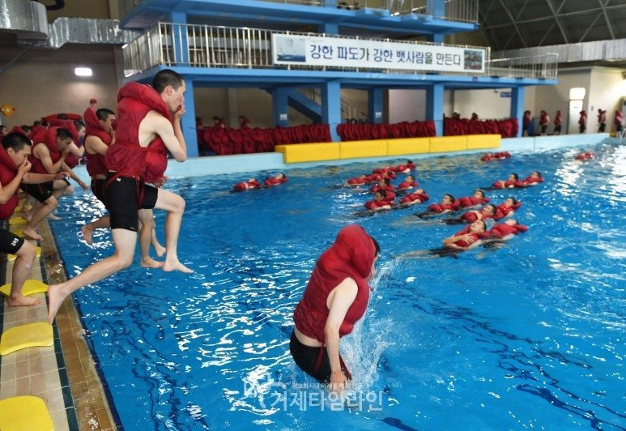
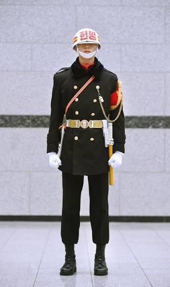

나의 여행 앨범
인생 최고의 여행지... 그곳은 바로 해군 기초군사훈련단이었습니다. 2년짜리 국내 무료 패키지, 후기 별점 ★☆☆☆☆.

이 문을 통과하는 순간, git으로 치면 되돌릴 수 없는 커밋을 한 셈이었다.
여행 BGM — 해군가
여행 사진

수상훈련 — 물에 빠지기 직전까진 다들 개발자였다
영창 근무 — 규정 어긴 사람은 린터 무시한 코드 취급

군기헌병 정복 (예시 사진) — 세미콜론 대신 각을 잡던 시절
여행 영상 — 바다로 가는 첫걸음
대한민국 해군 공식 영상. 난이도) 개발자 취업 >>> 군함 높이에서 물로 뛰어내리기